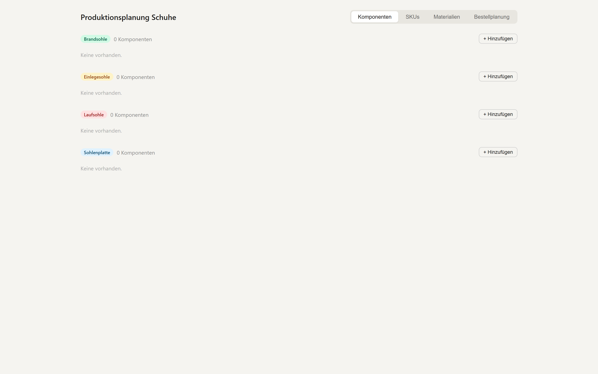

Ein datenbankgestütztes Planungstool, das aktuelle Lagerbestände mit SKU-Daten verknüpft, um die Machbarkeit geplanter Produktionsläufe zu bewerten und Engpassmaterialien zu identifizieren.
Die Produktionsplanung erforderte manuelle Prüfung von Materialverfügbarkeiten über verschiedene Systeme hinweg. Engpässe wurden oft erst während der Produktion sichtbar — mit direkten Auswirkungen auf Lieferzeiten und Planungssicherheit.
Lösung
Ein Tool, das direkt mit der Warenwirtschafts-Datenbank verbunden ist. Nutzer geben geplante Schuhmodelle ein, das System gleicht die Stücklisten (BOM) mit aktuellen Lagerbeständen ab und zeigt sofort, welche Materialien den Engpass bilden — bevor die Produktion beginnt.
Ergebnis
Engpässe werden vor Produktionsbeginn sichtbar
Planungsentscheidungen basieren auf Live-Daten statt auf Schätzungen
Direkte Datenbankanbindung eliminiert manuelle Übertragungsfehler
Screenshots & Einblicke

Übersicht — Komponenten, SKUs, Materialien und Bestellplanung